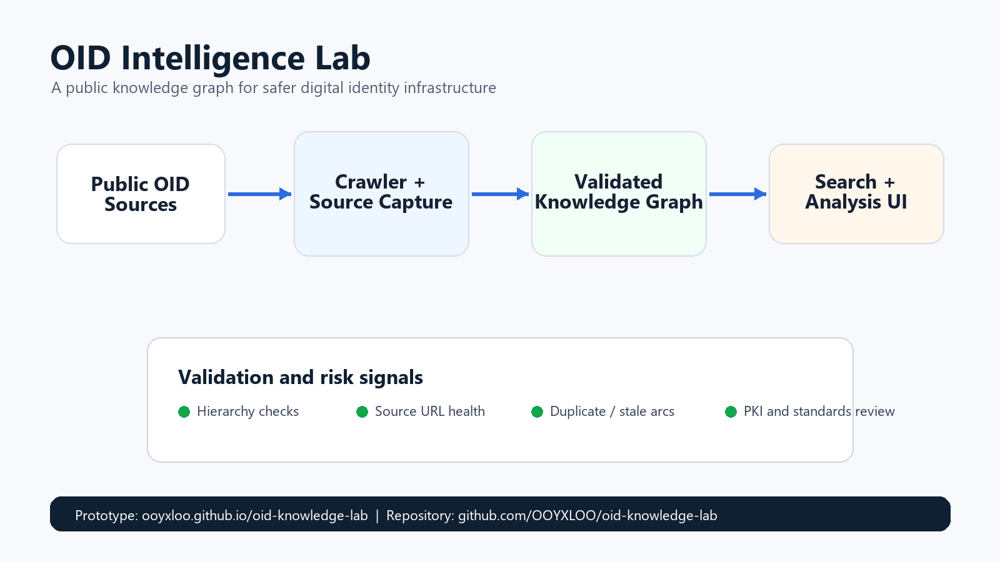

Public records are scattered
Registry pages, sitemap entries, enterprise assignments, and policy references are hard to inspect together.
A public knowledge graph for safer digital identity infrastructure. The lab turns scattered Object Identifier records into a searchable, source-linked, and validation-ready dataset for PKI review, certificate policy mapping, standards research, and governance workflows.

Problem
OIDs appear inside certificates, cryptographic algorithms, PKI policies, device identifiers, healthcare standards, enterprise schemas, and integration documents. When an identifier is stale, duplicated, undocumented, or misread, the failure often appears later as a certificate validation bug, an interoperability issue, or a compliance review gap.
Registry pages, sitemap entries, enterprise assignments, and policy references are hard to inspect together.
A single OID string rarely explains its parent arc, source reference, neighboring identifiers, or governance context.
Identifier mismatches can become expensive only after integration, audit, certificate rollout, or standards review.
Solution
Collect public OID directory metadata, source URLs, hierarchy hints, and registry fields without mirroring private or restricted content.
Represent arcs, owners, namespaces, source references, and neighboring identifiers as a graph instead of isolated strings.
Flag malformed arcs, source health gaps, duplicate descriptions, stale references, and clusters that deserve human review.
Expose the public browser and generated reports through versioned static artifacts that can be reviewed without server-side secrets.
Use cases
Prototype evidence
Static browser for public sitemap-level OID directory metadata and IANA PEN assignments.
Open browserTurns a small local OID inventory into a governance brief without uploading sensitive client data.
Open risk consoleDocuments robots, terms, sitemap, and what is intentionally excluded from the published dataset.
Read policyRecords generated artifact hashes, sizes, source links, and public review boundaries.
Inspect manifest